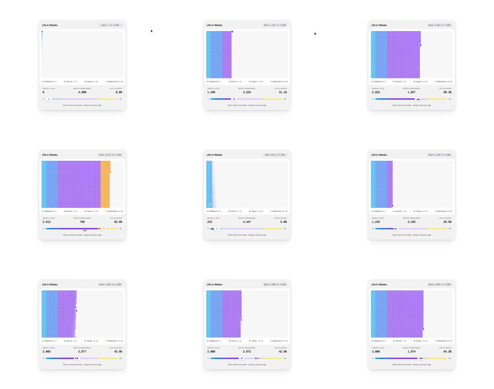

A calendar of your life: a 'Life in Weeks' card - a grid of 4,680 tiny week-cells (90 years) that fills as you drag an age slider: cells color by life stage (Childhood blue, School cyan, Career purple, Retirement orange), with stats 'Weeks lived / Weeks remaining / Life elapsed %' and a stage legend; dragging scrubs the grid fill in a wave and the numbers count up (0 -> 83.6% elapsed).
Media
Frame-by-frame

0-15%
Empty grid (bare dots), 0 weeks lived, slider at 0.
15-40%
Slider to ~28: grid fills row-by-row - blue childhood block, cyan school block, purple career begins; counters tick 1,456 lived / 3,224 remaining / 31.1%.
40-65%
Career purple dominates (68.3% elapsed); a cursor dot marks current week on the grid edge.
65-100%
Slider scrubs back and forth (5%, 42%, 83.6%): fill wave re-paints, stage colors flip cell-by-cell; orange retirement column appears at high ages.
Build prompt
Rebuild this interaction 1:1: "A calendar of your life" - a Life in Weeks card: a grid of 4,680 tiny week-cells (90 years) that fills as you drag an age slider. Cells color by life stage (Childhood blue, School cyan, Career purple, Retirement orange), with stats (Weeks lived / Weeks remaining / Life elapsed %) and a stage legend; dragging scrubs the fill in a wave and the numbers count up (0 -> 83.6% elapsed).
## Stack
React + TypeScript + Tailwind. Grid on canvas (4,680 cells); slider custom; counters tweened. Animate transform and opacity only for UI.
## Scene
Card: age slider; the week grid (rows of years, 52 cells per row); stats row (Weeks lived / Weeks remaining / Life elapsed %); stage legend (Childhood blue, School cyan, Career purple, Retirement orange); a cursor dot marks the current week on the grid edge.
## Motion spec
Pattern: scrub-driven fill.
- Drag: grid fills row-by-row 1:1 with the slider - cells flip from bare dots to their stage color in a wave; counters tween (300ms, tabular-nums) to e.g. 1,456 lived / 3,224 remaining / 31.1%.
- Stages color by age ranges: blue childhood block, cyan school, purple career dominating mid-life, orange retirement column at high ages.
- Current-week marker dot sits at the fill frontier.
- Scrubbing back and forth re-paints cells cell-by-cell in both directions.
## Calibration
- Fill is 1:1 with the drag - the wave re-paints as fast as the finger moves; no tweening behind.
- Counters tween 300ms and round cleanly; they lag the grid slightly (numbers settle after cells).
- Cells are tiny dots with even gaps; the stage color blocks must read as eras, not noise.
## Reduced motion
Grid fills in row chunks (opacity steps) as the slider moves; counters update directly.
## Don't miss
- 4,680 cells means canvas or optimized rendering - 4,680 DOM nodes will not scrub smoothly.
- The wave re-paint works in BOTH directions (scrubbing down unpaints cell-by-cell).
- The current-week marker rides the fill frontier - the "you are here" of the piece.
Mechanics
trigger
age slider drag
elements
4,680-cell week grid, age slider, stat counters, stage legend
properties
cell fill color/stage, counters tween, slider knob, current-week marker